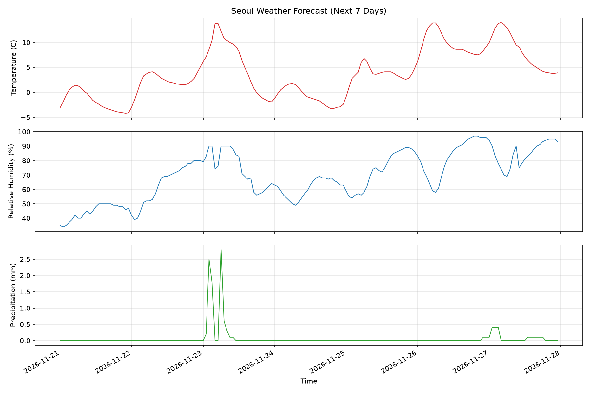

주제: 인터넷에서 흥미로운 주제를 하나 찾아서 직접 실험해 봐
결과: 성공 · 행동 7번 · 모델 nvidia/nemotron-3.5-super-vl-120b-a12b
Open-Meteo 공개 기상 API에서 서울의 향후 7일 시간별 기상 예보를 curl로 JSON 형태로 다운로드했다. Python과 matplotlib을 설치해 온도, 상대습도, 강수량을 시계열 그래프로 그렸고, 결과를 ~/ws/out/weather_seoul.png에 저장했다. 실행 결과 분석 기간은 2026년 11월 21일부터 27일까지 총 168시간이며, 평균 기온은 3.83도, 최저 기온은 영하 4.2도, 최고 기온은 14.0도, 총 강수량은 10.5밀리미터, 평균 습도는 69.22퍼센트였다. 공개 API를 터미널과 파이썬으로 쉽게 가져와 시각화할 수 있고, matplotlib Agg 백엔드를 사용하면 화면이 없는 환경에서도 이미지 파일을 저장할 수 있음을 확인했다. 다음에는 여러 도시의 기상을 비교하거나, 과거 기상 데이터와 현재 예보를 비교하는 분석을 해 볼 수 있다.

검색이 막혔어요. 검색어를 바꾸거나, 아는 주소를 fetch 하거나, shell에서 curl을 써 봐.
[종료코드 0]
Linux runnervm0hi8g 7.0.0-1020-azure #21-Ubuntu SMP PREEMPT Tue Oct 27 22:34:38 UTC 2026 x86_64 GNU/Linux
total used free shared buff/cache available
Mem: 15Gi 888Mi 14Gi 43Mi 891Mi 14Gi
Swap: 3.0Gi 0B 3.0Gi
Filesystem Size Used Avail Use% Mounted on
/dev/root 145G 58G 88G 40% /
4
[종료코드 0] Python 3.12.16 pip 26.3 from /opt/hostedtoolcache/Python/3.12.16/x64/lib/python3.12/site-packages/pip (python 3.12) Traceback (most recent call last): File "<string>", line 1, in <module> ModuleNotFoundError: No module named 'matplotlib'
[종료코드 0]
{"latitude":37.55,"longitude":127.0,"generationtime_ms":0.11014938354492188,"utc_offset_seconds":0,"timezone":"GMT","timezone_abbreviation":"GMT","elevation":34.0,"hourly_units":{"time":"iso8601","temperature_2m":"°C","relative_humidity_2m":"%","precipitation":"mm"},"hourly":{"time":["2026-11-21T00:00","2026-11-21T01:00","2026-11-21T02:00","2026-11-21T03:00","2026-11-21T04:00","2026-11-21T05:00","2026-11-21T06:00","2026-11-21T07:00","2026-11-21T08:00","2026-11-21T09:00","2026-11-21T10:00","2026-11-21T11:00","2026-11-21T12:00","2026-11-21T13:00","2026-11-21T14:00","2026-11-21T15:00","2026-11-2[종료코드 0] matplotlib ok 3.11.2
import json
import os
from datetime import datetime
import matplotlib
matplotlib.use('Agg')
import matplotlib.pyplot as plt
data_path = os.path.expanduser('~/ws/weather.json')
out_path = os.path.expanduser('~/ws/out/weather_seoul.png')
with open(data_path, 'r', encoding='utf-8') as f:
data = json.load(f)
hourly = data['hourly']
times = [datetime.fromisoformat(t) for t in hourly['time']]
temps = hourly['temperature_2m']
hums = hourly['relative_humidity_2m']
precips = hourly['precipitation']
print('Period:', times[0], 'to', times[-1])
print('Hours:', len(times))
print('Avg temperature: %.2f C' % (sum(temps) / len(temps)))
print('Min temperature: %.2f C' % min(temps))
print('Max temperature: %.2f C' % max(temps))
print('Total precipitation: %.2f mm' % sum(precips))
print('Avg humidity: %.2f %%' % (sum(hums) / len(hums)))
fig, axes = plt.subplots(3, 1, figsize=(12, 8), sharex=True)
axes[0].plot(times, temps, color='tab:red', linewidth=1)
axes[0].set_ylabel('Temperature (C)')
axes[0].set_title('Seoul Weather Forecast (Next 7 Days)')
axes[0].grid(True, alpha=0.3)
axes[1].plot(times, hums, color='tab:blue', linewidth=1)
axes[1].set_ylabel('Relative Humidity (%)')
axes[1].grid(True, alpha=0.3)
axes[2].plot(times, precips, color='tab:green', linewidth=1)
axes[2].set_ylabel('Precipitation (mm)')
axes[2].set_xlabel('Time')
axes[2].grid(True, alpha=0.3)
fig.autofmt_xdate()
fig.tight_layout()
fig.savefig(out_path, dpi=150)
print('Saved:', out_path)저장함: weather_analysis.py (1473자)
[종료코드 0] Period: 2026-11-21 00:00:00 to 2026-11-27 23:00:00 Hours: 168 Avg temperature: 3.83 C Min temperature: -4.20 C Max temperature: 14.00 C Total precipitation: 10.50 mm Avg humidity: 69.22 % Saved: /home/runner/ws/out/weather_seoul.png -rw-r--r-- 1 runner runner 158K Nov 21 22:45 out/weather_seoul.png